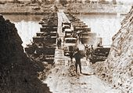

The war was part of the Arab–Israeli conflict, an ongoing dispute that has included many battles and wars since the founding of the State of Israel in 1948. During the Six-Day War of 1967, Israel had captured Egypt's Sinai Peninsula, roughly half of Syria's Golan Heights, and the territories of the West Bank which had been held by Jordan since 1948.
On June 19, 1967, shortly after the Six-Day War, the Israeli government voted to return the Sinai to Egypt and the Golan Heights to Syria in exchange for a permanent peace settlement and a demilitarization of the returned territories. It rejected a full withdrawal to the boundaries and the situation before the war,[citation needed] and also insisted on direct negotiations with the Arab governments as opposed to accepting negotiation through a third party.
This decision was not made public at the time, nor was it conveyed to any Arab state. Notwithstanding Abba Eban's (Israeli Minister of Foreign Affairs in 1967) insistence that this was indeed the case, there seems to be no solid evidence to corroborate his claim. No formal peace proposal was made either directly or indirectly by Israel. The Americans, who were briefed of the Cabinet's decision by Eban, were not asked to convey it to Cairo and Damascus as official peace proposals, nor were they given indications that Israel expected a reply.
The Arab position, as it emerged in September 1967 at the Khartoum Arab Summit, was to reject any peaceful settlement with the State of Israel. The eight participating states—Egypt, Syria, Jordan, Lebanon, Iraq, Algeria, Kuwait, and Sudan—passed a resolution that would later become known as the "three no's": there would be no peace, no recognition and no negotiation with Israel. Prior to that, King Hussein of Jordan had stated that he could not rule out a possibility of a "real, permanent peace" between Israel and the Arab states.
Armed hostilities continued on a limited scale after the Six-Day War and escalated into the War of Attrition, an attempt to wear down the Israeli position through long-term pressure. A ceasefire was signed in August 1970.
President Gamal Abdel Nasser of Egypt died in September 1970. He was succeeded by Anwar Sadat. A peace initiative led by both Sadat and UN intermediary Gunnar Jarring was tabled in 1971. Sadat set forth to the Egyptian Parliament his intention of arranging an interim agreement as a step towards a settlement on February 4, 1971, which extended the terms of the ceasefire and envisaged a reopening of the Suez Canal in exchange for a partial Israeli pullback. It resembled a proposal independently made by Moshe Dayan. Sadat had signaled in an interview with The New York Times in December 1970 that, in return for a total withdrawal from the Sinai Peninsula, he was ready "to recognize the rights of Israel as an independent state as defined by the Security Council of the United Nations." Gunnar Jarring coincidentally proposed a similar initiative four days later, on February 8, 1971. Egypt responded by accepting much of Jarring's proposals, though differing on several issues, regarding the Gaza Strip, for example, and expressed its willingness to reach an accord if it also implemented the provisions of United Nations Security Council Resolution 242. This was the first time an Arab government had gone public declaring its readiness to sign a peace agreement with Israel.
Course of War
Sinai Front

The Sinai was once again the arena of conflict between Israel and Egypt. The Egyptians had prepared for an assault across the canal and deployed five divisions totaling 100,000 soldiers, 1,350 tanks and 2,000 guns and heavy mortars for the onslaught. Facing them were 450 soldiers of the Jerusalem Brigade, spread out in 16 forts along the length of the canal. There were 290 Israeli tanks in all of Sinai, divided into three armored brigades, only one of which was deployed near the canal when hostilities commenced.
Large bridgeheads were established on the east bank on October 6. Israeli armoured forces launched counterattacks from October 6 to 8, but they were often piecemeal and inadequately supported and were beaten back principally by Egyptians using portable anti-tank missiles. Between October 9 and 12, the American response was a call for a cease-fire in place. The Egyptian units generally would not advance beyond a shallow strip for fear of losing the protection of their SAM batteries, which were situated on the west bank of the canal. In the Six-Day War, the Israeli Air Force had pummeled the defenseless Arab armies. Egypt (and Syria) had heavily fortified their side of the ceasefire lines with SAM batteries provided by the Soviet Union, against which the Israeli Air Force had no time to execute a Suppression of Enemy Air Defenses operation, due to the element of surprise. Israel, which had invested much of its defense budget building the region's strongest air force, would see the effectiveness of its air force curtailed in the initial phases of the conflict by the SAM presence.
On October 9, the IDF chose to concentrate its reserves and build up its supplies while the Egyptians remained on the strategic defensive. Nixon and Kissinger held back on a full-scale resupply of arms to Israel. Short of supplies, the Israeli government reluctantly accepted a cease-fire in place on October 12, but Sadat refused to do so. The Soviets started an airlift of arms to Syria and Egypt. The American global interest was to prove that Soviet arms could not dictate the outcome of the fighting, by supplying Israel. With an airlift in full swing, Washington was prepared to wait until Israeli success on the battlefield might persuade the Arabs and the Soviets to bring the fighting to an end. The Israelis decided to counterattack once Egyptian armor attempted to expand the bridgehead beyond the protective SAM umbrella. The riposte, codenamed Operation Gazelle, was launched on October 15. IDF forces spearheaded by Ariel Sharon's division broke through the Tasa corridor and crossed the Suez Canal to the north of the Great Bitter Lake.
After intense fighting, the IDF progressed towards Cairo and advanced southwards on the east bank of the Great Bitter Lake and in the southern extent of the canal right up to Port Suez. It was important for the Americans that the fighting should be ended, when all parties could still emerge from the conflict with their vital interests and self-esteem intact. Hence they indicated an acceptance of Israeli advance while violating the ceasefire, but the United States would not accept the destruction of the Egyptian 3rd Army Corps. Israeli progress towards Cairo was brought to a halt when the ceasefire was declared on October 24.
Egyption Front
Anticipating a swift Israeli armored counterattack by three armored divisions, the Egyptians had armed their assault force with large numbers of man-portable anti-tank weapons—rocket-propelled grenades and the less numerous but more advanced Sagger guided missiles, which proved devastating to the first Israeli armored counterattacks. Each of the five infantry divisions that were to cross the canal had been equipped with RPG-7 rockets and RPG-43 grenades and reinforced with an anti-tank guided missile battalion, as they would not have any armor support for nearly 12 hours.
In addition, the Egyptians had built separate ramps at the crossing points, reaching as high as 21 metres (69 ft) to counter the Israeli sand wall, provide covering fire for the assaulting infantry and to counter the first Israeli armored counterattacks. The scale and effectiveness of the Egyptian strategy of deploying these anti-tank weapons coupled with the Israelis' inability to disrupt their use with close air support (due to the SAM shield) greatly contributed to Israeli setbacks early in the war.
The Egyptian Army put great effort into finding a quick and effective way of breaching the Israeli defenses. The Israelis had built large 18-metre (59 foot) high sand walls with a 60-degree slope and reinforced with concrete at the water line. Egyptian engineers initially experimented with explosive charges and bulldozers to clear the obstacles, before a junior officer proposed using high pressure water cannons. The idea was tested and found to be a sound one, and several high pressure water cannons were imported from Britain and East Germany. The water cannons effectively breached the sand walls using water from the canal.
Wreckage of an Israeli A-4 Skyhawk on display in Egypt's war museum.
Egyptian Sukhoi Su-7 fighter jets conducting air strikes over the Bar Lev Line on October 6
At 2:00 pm on October 6, Operation Badr began with a large airstrike. More than 200 Egyptian aircraft conducted simultaneous strikes against three airbases, Hawk missile batteries, three command centers, artillery positions, and several radar installations. Airfields at Refidim and Bir Tamada were temporarily put out of service, and damage was inflicted on a Hawk battery at Ophir. The aerial assault was coupled with a barrage from more than 2,000 artillery pieces for a period of 53 minutes against the Bar Lev Line and rear area command posts and concentration bases.
Author Andrew McGregor claimed that the success of the first strike negated the need for a second planned strike. Egypt acknowledged the loss of five aircraft during the attack. Kenneth Pollack wrote that 18 Egyptian aircraft were shot down, and that these losses prompted the cancellation of the second planned wave. In one notable engagement during this period, a pair of Israeli F-4E Phantoms challenged 28 Egyptian MiGs over Sharm el-Sheikh and within half an hour, shot down seven or eight MiGs with no losses. One of the Egyptian pilots killed was Captain Atef Sadat, President Sadat's half-brother.
Simultaneously, 14 Egyptian Tupolev Tu-16 bombers attacked Israeli targets in the Sinai with Kelt missiles, while another two Egyptian Tupolevs fired two Kelt missiles at a radar station in central Israel. One missile was shot down by a patrolling Israeli Mirage fighter, and the second fell into the sea. The attack was an attempt to warn Israel that Egypt could retaliate if it bombed targets deep within Egyptian territory.
An Israeli Mirage III shot down by an Egyptian MiG-21
Under cover of the initial artillery barrage, the Egyptian assault force of 32,000 infantry began crossing the canal in twelve waves at five separate crossing areas, from 14:05 to 17:30, in what became known as The Crossing. The Egyptians prevented Israeli forces from reinforcing the Bar Lev Line and proceeded to attack the Israeli fortifications. Meanwhile, engineers crossed over to breach the sand wall.[149][150] The Israeli Air Force conducted air interdiction operations to try to prevent the bridges from being erected, but took losses from Egyptian SAM batteries. The air attacks were ineffective overall, as the sectional design of the bridges enabled quick repairs when hit.
Despite fierce resistance, the Israeli reserve brigade garrisoning the Bar-Lev forts was overwhelmed. According to Shazly, within six hours, fifteen strongpoints had been captured as Egyptian forces advanced several kilometres into the Sinai. Shazly's account was disputed by Kenneth Pollack, who noted that for the most part, the forts only fell to repeated assaults by superior forces or prolonged sieges over many days.[152] The northernmost fortification of the Bar Lev Line, code-named 'Fort Budapest', withstood repeated assaults and remained in Israeli hands throughout the war. Once the bridges were laid, additional infantry with the remaining portable and recoilless anti-tank weapons began to cross the canal, while the first Egyptian tanks started to cross at 20:30.
The Egyptians also attempted to land several heli-borne commando units in various areas in the Sinai to hamper the arrival of Israeli reserves. This attempt met with disaster as the Israelis shot down up to 20 helicopters, inflicting heavy casualties. Israeli Major General (res.) Chaim Herzog placed Egyptian helicopter losses at 14. Other sources claim that "several" helicopters were downed with "total loss of life" and that the few commandos that did filter through were ineffectual and presented nothing more than a "nuisance". Kenneth Pollack asserted that despite their heavy losses, the Egyptian commandos fought exceptionally hard and created considerable panic, prompting the Israelis to take precautions that hindered their ability to concentrate on stopping the assault across the canal.
Egyptian forces advanced approximately 4 to 5 km (2+1⁄2 to 3 mi) into the Sinai Desert with two armies (both corps-sized by western standards, included the 2nd Infantry Division in the northern Second Army). By the following morning, some 850 tanks had crossed the canal. In his account of the war, Saad El Shazly noted that by the morning of October 7, the Egyptians had lost 280 soldiers and 20 tanks, though this account is disputed.
An Egyptian MiG-17 shot down during the dogfight over Sharm el-Sheikh.
Most Israeli soldiers defending the Bar Lev Line became casualties, and some 200 were taken prisoner. In the subsequent days, some defenders of the Bar Lev Line managed to break through the Egyptian encirclement and return to their lines or were extracted during later Israeli counterattacks. For the next several days, the IAF played a minimal role in the fighting, largely because it was needed to deal with the simultaneous, and ultimately more threatening, Syrian invasion of the Golan Heights.
Egyptian forces then consolidated their initial positions. On October 7, the bridgeheads were enlarged an additional 4 km (2+1⁄2 mi), at the same time repulsing Israeli counterattacks. In the north, the Egyptian 18th Division attacked the town of El-Qantarah el-Sharqiyya, engaging Israeli forces in and around the town. The fighting there was conducted at close quarters, and was sometimes hand-to-hand. The Egyptians were forced to clear the town building by building. By evening, most of the town was in Egyptian hands. El-Qantarah was completely cleared by the next morning.
Meanwhile, the Egyptian commandos airdropped on October 6 began encountering Israeli reserves the following morning. Both sides suffered heavy losses, but the commandos were at times successful in delaying the movement of Israeli reserves to the front. These special operations often led to confusion and anxiety among Israeli commanders, who commended the Egyptian commandos. This view was contradicted by another source that stated that few commandos made it to their objectives, and were usually nothing more than a nuisance. According to Abraham Rabinovich, only the commandos near Baluza and those blocking the road to Fort Budapest had measurable success. Of the 1,700 Egyptian commandos inserted behind Israeli lines during the war, 740 were killed—many in downed helicopters—and 330 taken prisoner
Casualties
Israel suffered between 2,521 and 2,800 killed in action. An additional 7,250 to 8,800 soldiers were wounded. Some 293 Israelis were captured. Approximately 400 Israeli tanks were destroyed. Another 600 were disabled but returned to service after repairs. A major Israeli advantage, noted by many observers, was their ability to quickly return damaged tanks to combat. The Israeli Air Force lost 102 airplanes: 32 F-4s, 53 A-4s, 11 Mirages and 6 Super Mysteres. Two helicopters, a Bell 205 and a CH-53, were also lost. According to Defense Minister Moshe Dayan, nearly half of these were shot down during the first three days of the war. IAF losses per combat sortie were less than in the Six-Day War of 1967.
Arab casualties were known to be much higher than Israel's, though precise figures are difficult to ascertain as Egypt and Syria never disclosed official figures. The lowest casualty estimate is 8,000 (5,000 Egyptian and 3,000 Syrian) killed and 18,000 wounded. The highest estimate is 18,500 (15,000 Egyptian and 3,500 Syrian) killed. Most estimates lie somewhere in between the two, with the Insight Team of London's The Sunday Times putting combined Egyptian and Syrian losses at 16,000 killed and yet another source citing a figure of some 15,000 dead and 35,000 wounded. U.S. estimates placed Egyptian casualties at 13,000. Iraq lost 278 killed and 898 wounded, while Jordan suffered 23 killed and 77 wounded. Some 8,372 Egyptians, 392 Syrians, 13 Iraqis and 6 Moroccans were taken prisoner.
Arab tank losses amounted to 2,250 though Garwych cites a figure of 2,300. 400 of these fell into Israeli hands in good working order and were incorporated into Israeli service. Between 341 and 514 Arab aircraft were shot down. According to Herzog, 334 of these aircraft were shot down by the IAF in air-to-air combat for the loss of only five Israeli planes. The Sunday Times Insight Team notes Arab aircraft losses of 450. 19 Arab naval vessels, including 10 missile boats, were sunk for no Israeli losses